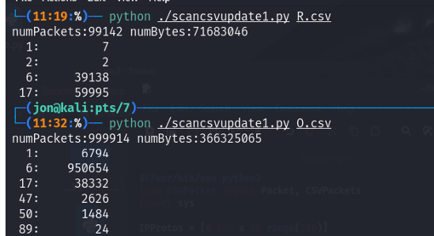

Network Traffic Analysis
Header Analysis
We often wish to examine network traffic to analyze whether a given network is running correctly, is under attack, has secrets in it we would like to reveal or protect, and so on. There is an engineering tradeoff here. We can’t store and analyze all the data that flies by in the network. So we would like to use a portion of the total data to decide where to look deeper.
Often the initial security analysis uses protocol headers or security and application logs.
- This information is small, so it can be stored for more traffic over a longer period of time.
- This information can be determined from packets flying by with a minimum of processing, so it is possible to get the info without either spending a fortune in monitoring hardware or slowing down the network traffic.
There is a perception that the content data is “sensitive” and that header data is “anonymized” or information that people don’t care as much about. If you had time to read the Kieran Healy’s amusing article on “Using Metadata to Find Paul Revere”, you can see that this is not always a valid perception.
Let’s see what we can find from the most basic packet header data. The trick here is to rearrange the data in various ways and look for ‘spikes’ in frequency. Then look at what all the frequent items have in common, such as the same protocol, similar IP addresses, etc. To do this well, you need to know about common TCP and UDP services. Fortunately, we have Google to help us with that!
Data Overview
We have two samples of packet data, entitled ‘R’ and ‘O’. The packet data is in order, and covers a brief period of time. For each packet, you get:
- Length, IP type, IP Source Address, IP Destination Address
- TCP: Flags, Source port, Destination Port
- UDP: Source port, Destination port
- ICMP: type, code
Analysis Results
The ultimate goal of this assignment is to understand the function of the networks monitored in the R and O data sets. What is their function? We will choose among: work, home, data center, ISP. On the way, we’ll learn as much as we can about these networks from the scanty data that we have.
Protocol Analysis starting point
IP protocol 1=icmp; 2=igmp; 6=tcp; 17=udp. For example, ICMP (IP Protocol 1) occurs in 7 packets. Each protocol has its own uses, and we can infer network functionality from these details.
Extended Statistics and Comprehensive Network Analysis
1. Enhancing the Script with Port Statistics:
To deepen the analysis, the script now includes functionality to count the usage of well-known destination port numbers for TCP and UDP traffic (ports 1–1024) when the -stats flag is enabled. This provides detailed insights into port-specific activity across the R and O datasets.
Findings:
- R.csv Analysis:
- Significant activity on key ports such as:
- Port 80 (HTTP): Indicates general web browsing.
- Port 110 (POP3): Suggests frequent email retrieval.
- Port 139 (NetBIOS): Implies file sharing and printer access, typical in a business environment.
- Ports 22 (SSH), 23 (Telnet), and 25 (SMTP): Reflect secure shell and email services commonly seen in workplaces.
- UDP Port 53 (DNS): Consistent with work network traffic.
- The traffic patterns strongly suggest a work network environment, with multiple internal services supporting business needs.
- Significant activity on key ports such as:
- O.csv Analysis:
- High activity across multiple critical internet service ports:
- Port 25 (SMTP): Over 211,000 packets indicate extensive email traffic, typical of ISPs or data centers handling bulk email services.
- Port 80 (HTTP): 156,000+ packets signify heavy web traffic, consistent with hosting multiple clients.
- UDP Port 53 (DNS): Over 21,000 packets reflect essential DNS services for large-scale environments.
- Ports 22 (SSH), 445 (TCP/IP MS Networking), and 135 (RPC): High activity on management and access ports supports the notion of a data center or ISP managing remote systems.
- The scale and nature of the traffic point to a data center or ISP serving a broad user base with diverse services.
- High activity across multiple critical internet service ports:
2. IP Address Analysis:
With the addition of the -countip flag, the script identifies distinct IP addresses and sorts them by usage count. This reveals valuable insights into network configurations and traffic behavior.
- R.csv Observations:
- High-count internal IPs within the private
10.x.x.xrange suggest central devices such as servers (e.g.,10.5.63.230and10.5.63.36). - Low-count IPs may represent less frequently accessed devices or other network equipment.
- Public IPs like
199.170.104.36and209.67.181.11indicate external communication points, likely gateways or proxy servers. - The presence of subnetting (e.g.,
10.5.x.x) and external IPs implies a corporate network with logical segmentation and possibly a DMZ (demilitarized zone).
- High-count internal IPs within the private
- O.csv Observations:
- High-traffic IPs (e.g.,
192.245.12.221and192.245.12.242) suggest centralized infrastructure like routers or gateways typical of ISPs. - Low-traffic IPs likely correspond to individual client endpoints, such as home users or small businesses.
- The mix of high-frequency infrastructure IPs and low-frequency client IPs reinforces the classification of this network as an ISP.
- High-traffic IPs (e.g.,
3. Network Prefix Dominance:
Using the -countnetwork2 and -countnetwork3 flags, the dominant network prefixes were identified:
- R.csv: The prefix
10.5dominates, with10.5.63being the most significant subset (97,289 packets). This indicates segmentation typical of corporate environments. - O.csv: The prefix
192.245dominates, with192.245.12being the top subset (414,455 packets). This aligns with large-scale ISP infrastructure.
4. Routing and VPN Protocols:
Enhanced filtering for specific protocols (e.g., GRE, IPSEC, OSPF) revealed key insights:
- R.csv: No evidence of routing or VPN protocols was found.
- O.csv: Significant presence of routing and VPN protocols indicates infrastructure supporting tunneling (GRE), virtual private networks (IPSEC), and dynamic routing (OSPF), further confirming the ISP classification.
5. Additional Features:
New protocol arguments enable focused analysis of specialized traffic types. The -other flag allows isolated evaluation of unusual or less common protocols, aiding in deeper investigation.
Additional Insights: Protocol and Network Prefix Analysis
7. Identifying Associated Network Prefixes:
Through extended analysis, other network prefixes closely associated with specific protocols have been identified:
- GRE Protocol:
- Most frequent IPs:
- 209.104.16.215: 2567 packets.
- 209.104.16.9: 2567 packets.
- Less frequent IPs:
- 209.104.16.58: 59 packets.
- 209.104.16.90: 59 packets.
- The 209.104.16 network prefix is strongly associated with GRE protocol traffic.
- Most frequent IPs:
- IPSEC Protocol:
- Most frequent IP:
- 198.182.113.1: 690 packets.
- The 198.182.113 network prefix is a valid grouping for IPSEC protocol usage.
- Most frequent IP:
- OSPF Protocol:
- Most frequent IP:
- 207.182.35.58: 16 packets.
- Other IPs within the same subnet:
- 207.182.35.49: smaller count.
- 207.182.35.50: smaller count.
- The 207.182.35 network prefix is valid and associated with OSPF protocol traffic.
- Most frequent IP:
8. Correlation with Network Characteristics:
Further analysis of the OSPF protocol provides insights into the network types:
- R.csv (Work Network):
- No evidence of GRE, IPSEC, or OSPF protocols.
- Routing and VPN protocols are typically unnecessary for internal communication within corporate networks.
- Traffic is dominated by application-specific protocols (e.g., HTTP, FTP), reinforcing the classification as a work network.
- O.csv (ISP Network):
- Significant evidence of GRE, IPSEC, and OSPF protocols.
- These protocols indicate the need for secure tunneling, complex routing mechanisms, and extensive inter-network communication.
- The presence of such protocols aligns with the characteristics of ISP or data center networks.
9. Counting Packets by Service:
To further enhance traffic analysis, the script includes a new -connto option. This functionality counts the number of packets sent to each service (ports 1-1024) based on the destination IP address (ipdst) and its associated protocol (proto) and destination port (dport).
Output Format:
- The output maps each
ipdstto a tuple:(proto, dport):Whereprotorepresents the IP protocol (e.g., TCP or UDP) anddportreflects the destination port number.
- This provides clear and organized visibility into service-specific traffic patterns across networks.
The functionality is seamlessly integrated into the script, ensuring usability for large-scale datasets.
Advanced Traffic Analysis: Server Identification and Network Roles
9. The -connto Option:
An extended script functionality has been developed to count the number of packets sent to each service (ports 1–1024) in the network. This is achieved using a dictionary that maps each destination IP address (ipdst) to a tuple of the protocol (proto) and destination port (dport). For instance:
(proto, dport):protorepresents the IP protocol (e.g., TCP or UDP), anddportreflects the destination port number.
Data from the -connto output is structured to provide clear insights into service-specific traffic patterns and server roles.
10. Findings:
When the -connto option is applied to the R and O datasets (excluding broadcast addresses ending in .255), significant server roles are revealed based on port activity:
- Top 20 Servers:
- An interesting connection at
10.5.63.1/113: Port 113 is known for IRC traffic, which poses security risks and is often blocked by firewalls. - Additional servers revealed unique roles:
- R.csv Data:
10.5.63.7and10.5.63.230: File or print servers handling NetBIOS and SMB traffic (ports 137, 138, and 139).10.5.63.6: Multi-purpose server supporting DNS queries (port 53), email services (ports 25 and 110), and SSH connections (port 22). Likely functions as DNS resolver, mail server, and management server.- External connections to root DNS servers (
128.9.0.107and192.5.5.241) via10.5.63.24indicate outbound DNS handling. - Connections to external mail servers (e.g.,
216.101.171.2on port 110) highlight infrastructure for external email and domain name resolution.
- O.csv Data:
- Servers with well-defined roles based on port activity:
- Mail servers (SMTP, port 25): IPs like
192.245.12.242,192.245.12.234, and others handle extensive email traffic. - DNS servers (port 53): IPs like
192.245.12.56and192.245.12.7process large volumes of DNS queries. - Web servers (HTTP, port 80): High traffic indicates significant web service activity.
- Time synchronization servers (NTP, port 123): Activity highlights time server functionality.
- Connections to ports like 113 (ident) and 110 (POP3) suggest business-support services and email retrieval systems.
- Mail servers (SMTP, port 25): IPs like
- Data indicates mixed roles in infrastructure services (email, DNS, web traffic) typical of large enterprises.
- Servers with well-defined roles based on port activity: